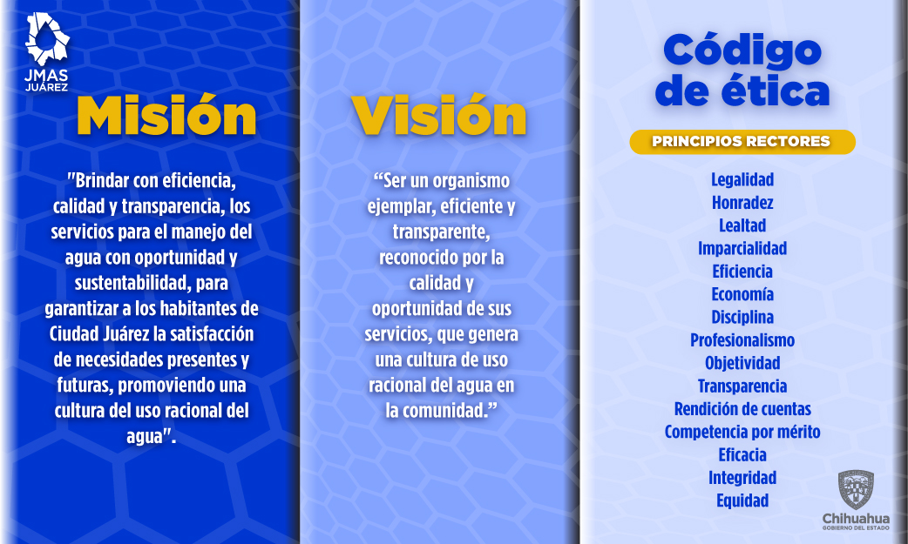
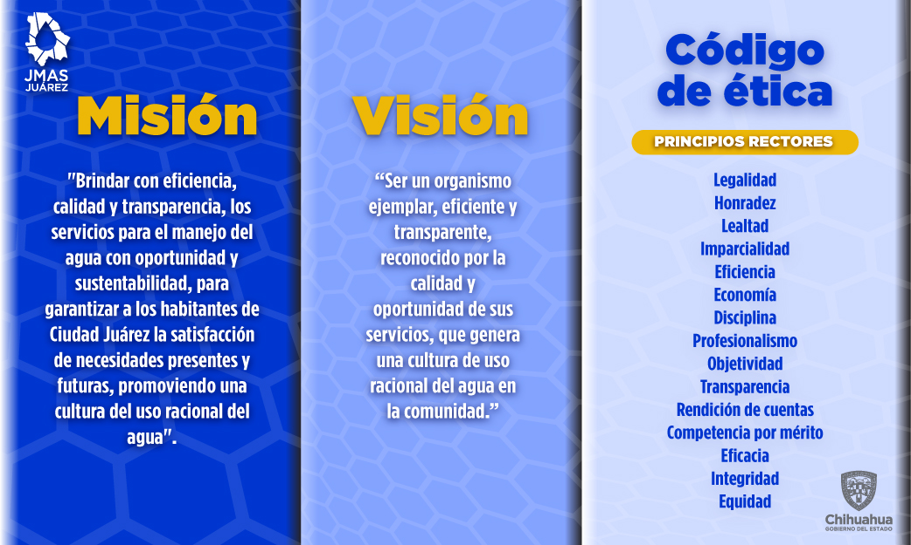

Desde ahora los usuarios podrán ponerse en contacto con la JMAS Juárez marcando el 073 “La línea del Agua” para obtener información, levantar reportes o comunicarse con algún funcionario de esta descentralizada.
Esta modalidad fue creada para facilitar a nuestros usuarios un enlace rápido y efectivo, donde será recibida la llamada por un operador de forma directa sin necesidad de realizar múltiples marcaciones para ser atendido. Cabe señalar que los próximos días estarán disponibles los teléfonos acostumbrados para comunicarse a las instalaciones de JMAS Juárez.Estamos trabajando para brindarte un mejor servicio, Reportes al Centro de Contacto Telefónico 073, así como las páginas, www.facebook.com/JmasJuarez y jmasjuarez.gob.mx
 
